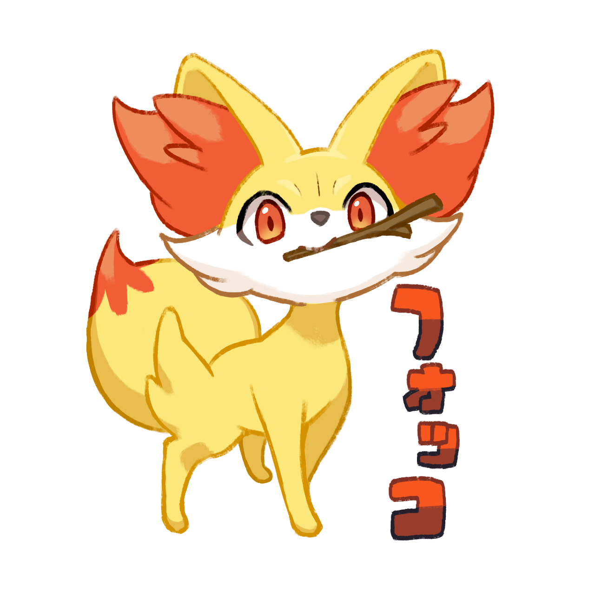
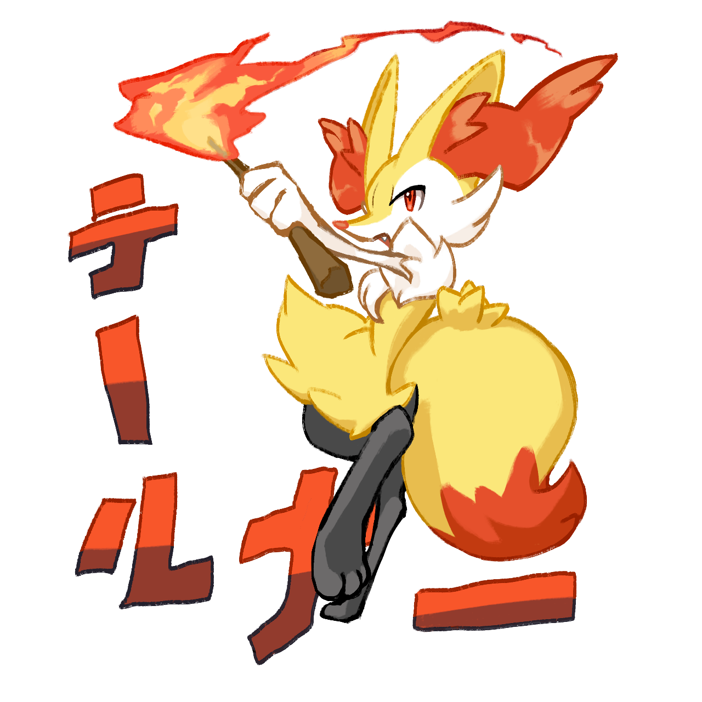
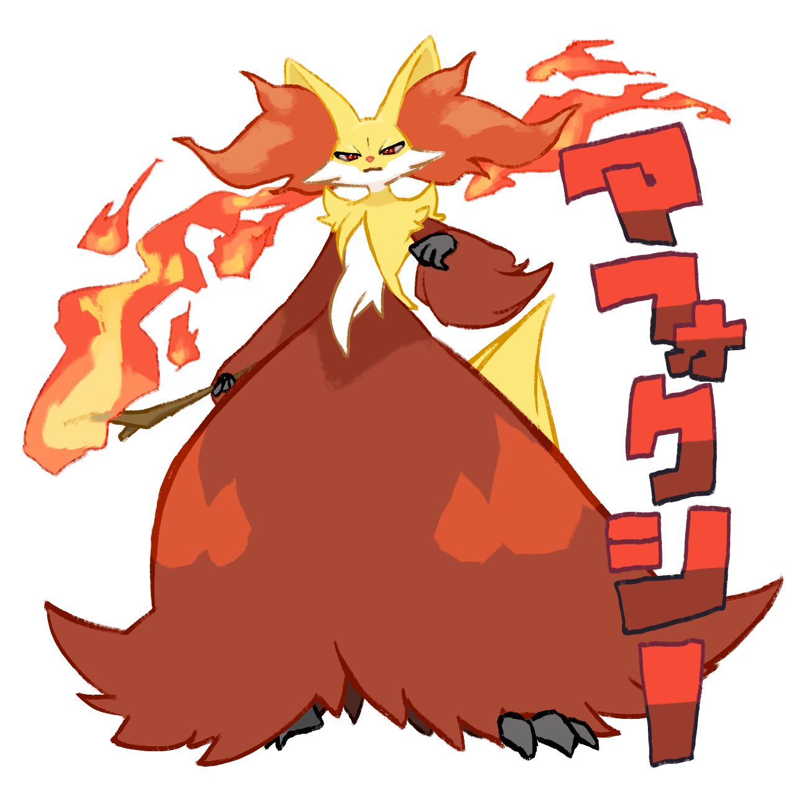

好きなキャラクター
ひげまんじゅう みーさま /株式会社アミューズ
ぬいぐるみ会社である株式会社アミューズのキャラクターシリーズ『ひげまんじゅう』のキャラクター。
修学旅行先で北海道に行った際に泊まったホテルの売店でみーさまのぬいぐるみを購入。
その後YouTubeチャンネルを見つけ、そこに投稿されているアニメを見て好きになった。
フォッコ系 /任天堂・クリーチャーズ・ゲームフリーク



3DSゲームソフト『ポケットモンスターX・Y』で最初に選べるポケモン３体のうちの１体と、その進化系。
フォッコが進化してテールナー、さらに進化してマフォクシーになる。
初めて買ってもらったゲームで選んだ最初のポケモンだったので、愛着がある。TVアニメではヒロインの相棒ポケモンだった。
全巻持ってる漫画
ゴールデンカムイ

作：野田サトル 出版社：集英社
明治末期の北海道を舞台とした金塊をめぐるバトル漫画。サバイバル要素・ギャグ要素もあり、アイヌの文化やグルメなどの民俗文化も知れるぞ！
銀の匙 Silver Spoon

作：荒川弘 出版社：小学館
北海道の農業高等学校を舞台とした学園漫画。笑い・青春・成長が温かく描かれており、農業・酪農のことを面白く知れるぞ！